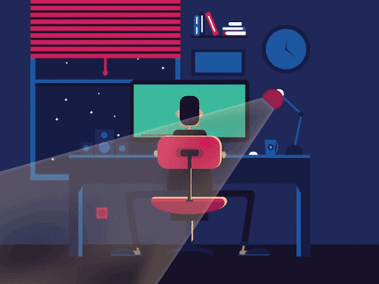
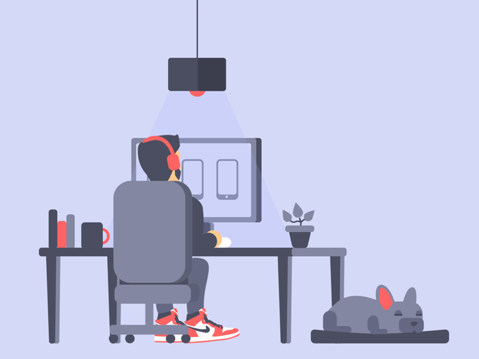
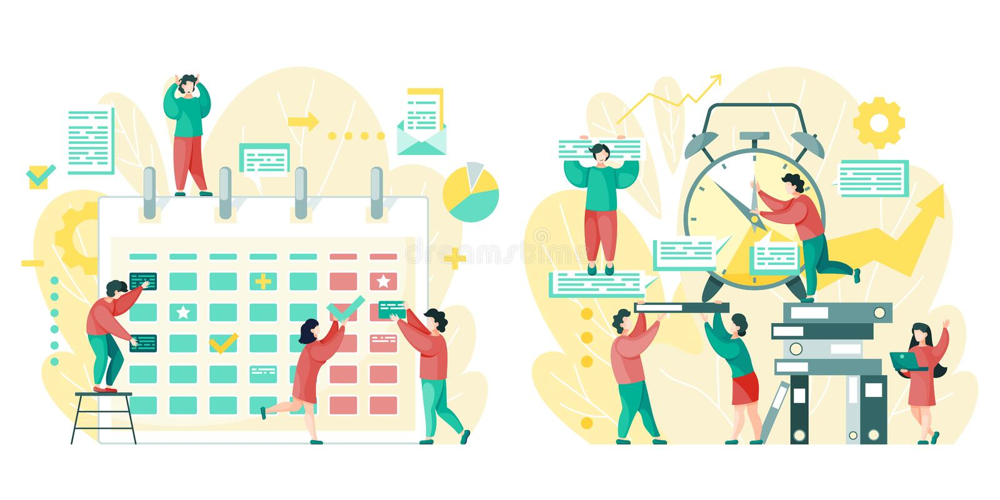
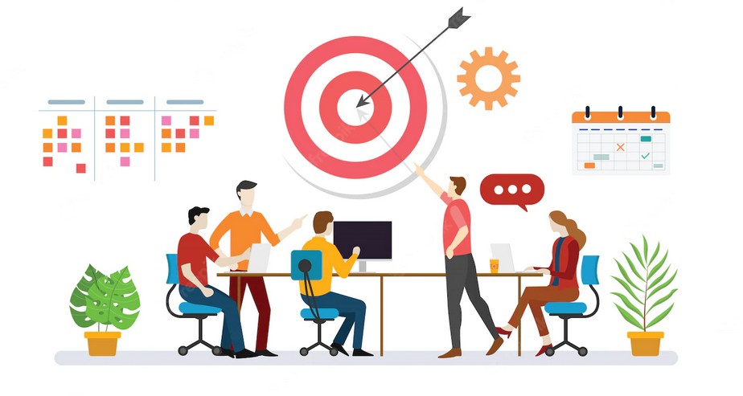

PROYECTO OCUPACIONAL
Juan Nogues

Autodiagnostico
Reconocimiento de habilidades, experiencias, deseos e intereses.

Metas y Objetivos
Uso de metodología SMART.

Plan de Acción
Se toman en cuenta prioridades, tiempo, recusos, organizacion, etc.

Reflexión
Cierre sobre el transito en CT y los aprendizajes.

